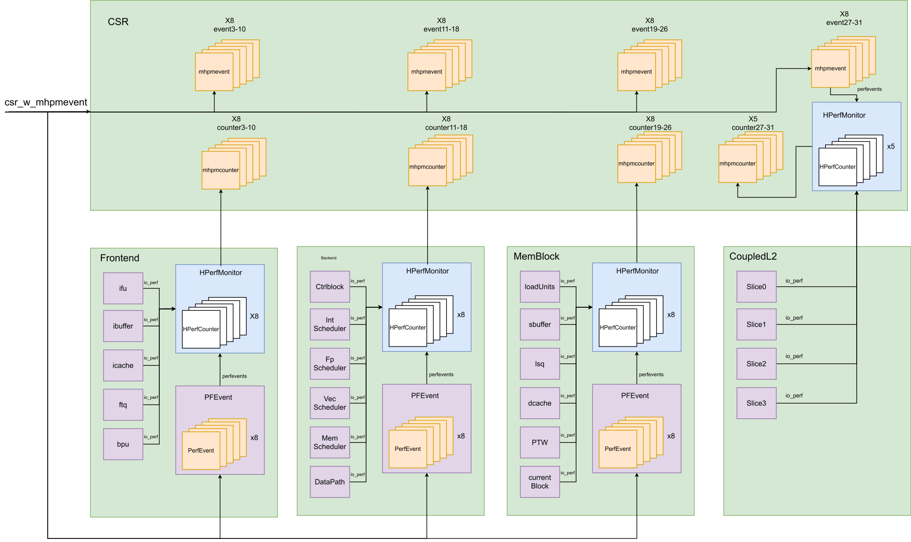

HPM
- バージョン: V2R2
- ステータス: OK
- 日付: 2025/02/27
- コミット: xxx
基本情報
用語説明
| 略語 | 正式名称 | 説明 |
|---|---|---|
| HPM | Hardware performance monitor | ハードウェアパフォーマンス監視ユニット |
サブモジュールリスト
| サブモジュール | 説明 |
|---|---|
| HPerfCounter | 単一カウンターモジュール |
| HPerfMonitor | カウンター組織モジュール |
| PFEvent | Hpmeventレジスタのコピー |
設計仕様
- RISC-V特権マニュアルに基づいた基本的なハードウェアパフォーマンス監視機能に加え、sstcおよびsscofpmf拡張をサポート
- ハードウェアスレッドが実行したクロックサイクル数 (cycle)
- ハードウェアスレッドがリタイアした命令数 (minstret)
- ハードウェアタイマー (time)
- カウンターオーバーフローフラグ (time)
- 29個のハードウェアパフォーマンスカウンター (hpmcounter3 - hpmcouonter3)
- 29個のハードウェアパフォーマンスイベントセレクター (mhpmcounter3 - mhpmcounter31)
- 最大 2^10 種類のパフォーマンスイベントの定義をサポート
機能
HPMの基本機能は以下の通りです。
- mcountinhibitレジスタを介してすべてのパフォーマンスイベント監視を無効化する。
- 各監視ユニットのパフォーマンスイベントカウンターを初期化する。これには、mcycle, minstret, mhpmcounter3 - mhpmcounter31が含まれる。
- 各監視ユニットのパフォーマンスイベントセレクターを設定する。これには、mhpmcounter3 - mhpmcounter31が含まれる。XiangShan Kunming Lakeアーキテクチャでは、各イベントセレクターに最大4つのイベントの組み合わせを設定できる。イベントインデックス値、イベント組み合わせ方法、サンプリング特権レベルをイベントセレクターに書き込むと、指定されたサンプリング特権レベルで設定されたイベントが正常にカウントされ、組み合わせ後の結果に基づいてイベントカウンターに加算される。
- xcounterenを設定してアクセス権限を付与する。
- mcountinhibitレジスタを介してすべてのパフォーマンスイベント監視を有効にし、カウントを開始する。
HPMイベントオーバーフロー割り込み
Kunming Lakeパフォーマンス監視ユニットが発行するオーバーフロー割り込みLCOFIPは、統一された割り込みベクター番号12を持ち、割り込みの有効化および処理プロセスは通常のプライベート割り込みと同じです。
全体設計
各サブモジュールでパフォーマンスイベントを定義し、サブモジュールは generatePerfEvent を呼び出してパフォーマンスイベントを io_perf として4つの主要モジュール（Frontend, Backend, MemBlock, CoupledL2）に出力します。
上記の4つのモジュールは get_perf メソッドを呼び出してサブモジュールのパフォーマンスイベント出力を取得します。同時に、各主要モジュールは PFEvent モジュールをインスタンス化し、CSR内の mhpmevent のコピーとして、必要なパフォーマンスイベントセレクターデータとサブモジュールのパフォーマンスイベント出力セットを HPerfMonitor モジュールに接続し、パフォーマンスイベントカウンターに適用される増分結果を計算します。
最後に、CSRは4つのトップレベルモジュールからのパフォーマンスイベントカウンターの増分結果を収集し、それぞれCSRレジスタ mhpmcounter3-31 に入力して累計カウントを行います。
特に、CoupledL2 のパフォーマンスイベントは直接CSRモジュールに入力され、mhpmevent レジスタから読み出されたイベント選択情報に基づいて、CSRにインスタンス化された HPerfMonitor モジュールで処理された後、CSRレジスタ mhpmcounter26-31 に入力されて累計カウントされます。
具体的なHPMの全体設計ブロック図は此图を参照してください。

HPerfMonitor カウンター組織モジュール
入力されたイベント選択情報（events）を対応する HPerfCounter モジュールに入力し、すべてのパフォーマンスイベントカウント情報を各 HperfCounter モジュールにコピーして入力します。
すべての HperfCounter の出力を収集します。
HperfCounter 単一カウンターモジュール
入力されたイベント選択情報に基づいて、必要なパフォーマンスイベントカウント情報を選択し、イベント選択情報内のカウントモードに従って、入力されたパフォーマンスイベントを組み合わせて出力します。
PFEvent Hpmeventレジスタのコピー
CSRレジスタ mhpmevent のコピー：CSRの書き込み情報を収集し、mhpmevent の変更を同期します。
HPM関連の制御レジスタ
マシンモードパフォーマンスイベントカウント禁止レジスタ (MCOUNTINHIBIT)
マシンモードパフォーマンスイベントカウント禁止レジスタ (mcountinhibit) は、32ビットのWARLレジスタで、主にハードウェアパフォーマンス監視カウンターがカウントするかどうかを制御するために使用されます。パフォーマンス分析が不要なシナリオでは、カウンターをオフにしてプロセッサの消費電力を削減できます。
| 名称 | ビットフィールド | 読み書き | 動作 | リセット値 |
|---|---|---|---|---|
| HPMx | 31:4 | RW | mhpmcounterx レジスタのカウント禁止ビット: 0: 正常にカウント 1: カウント禁止 |
0 |
| IR | 3 | RW | minstret レジスタのカウント禁止ビット: 0: 正常にカウント 1: カウント禁止 |
0 |
| -- | 2 | RO 0 | 予約済み | 0 |
| CY | 1 | RW | mcycle レジスタのカウント禁止ビット: 0: 正常にカウント 1: カウント禁止 |
0 |
マシンモードパフォーマンスイベントカウンターアクセス許可レジスタ (MCOUNTEREN)
マシンモードパフォーマンスイベントカウンターアクセス許可レジスタ (mcounteren) は、32ビットのWARLレジスタで、主にユーザーモードのパフォーマンス監視カウンターがマシンモード以下の特権レベル（HS-mode/VS-mode/HU-mode/VU-mode）でアクセスする権限を制御するために使用されます。
| 名称 | ビットフィールド | 読み書き | 動作 | リセット値 |
|---|---|---|---|---|
| HPMx | 31:4 | RW | hpmcounterenx レジスタのM-mode以下でのアクセス権限ビット: 0: hpmcounterxへのアクセスで不正命令例外が発生 1: hpmcounterxへの正常なアクセスを許可 |
0 |
| IR | 3 | RW | instret レジスタのM-mode以下でのアクセス権限ビット: 0: instretへのアクセスで不正命令例外が発生 1: 正常なアクセスを許可 |
0 |
| TM | 2 | RW | time/stimecmp レジスタのM-mode以下でのアクセス権限ビット: 0: timeへのアクセスで不正命令例外が発生 1: 正常なアクセスを許可 |
0 |
| CY | 1 | RW | cycle レジスタのM-mode以下でのアクセス権限ビット: 0: cycleへのアクセスで不正命令例外が発生 1: 正常なアクセスを許可 |
0 |
スーパーバイザモードパフォーマンスイベントカウンターアクセス許可レジスタ (SCOUNTEREN)
スーパーバイザモードパフォーマンスイベントカウンターアクセス許可レジスタ (scounteren) は、32ビットのWARLレジスタで、主にユーザーモードのパフォーマンス監視カウンターがユーザーモード（HU-mode/VU-mode）でアクセスする権限を制御するために使用されます。
| 名称 | ビットフィールド | 読み書き | 動作 | リセット値 |
|---|---|---|---|---|
| HPMx | 31:4 | RW | hpmcounterenx レジスタのユーザーモードアクセス権限ビット: 0: hpmcounterxへのアクセスで不正命令例外が発生 1: hpmcounterxへの正常なアクセスを許可 |
0 |
| IR | 3 | RW | instret レジスタのユーザーモードアクセス権限ビット: 0: instretへのアクセスで不正命令例外が発生 1: 正常なアクセスを許可 |
0 |
| TM | 2 | RW | time レジスタのユーザーモードアクセス権限ビット: 0: timeへのアクセスで不正命令例外が発生 1: 正常なアクセスを許可 |
0 |
| CY | 1 | RW | cycle レジスタのユーザーモードアクセス権限ビット: 0: cycleへのアクセスで不正命令例外が発生 1: 正常なアクセスを許可 |
0 |
仮想化モードパフォーマンスイベントカウンターアクセス許可レジスタ (HCOUNTEREN)
仮想化モードパフォーマンスイベントカウンターアクセス許可レジスタ (hcounteren) は、32ビットのWARLレジスタで、主にユーザーモードのパフォーマンス監視カウンターがゲスト仮想マシン（VS-mode/VU-mode）でアクセスする権限を制御するために使用されます。
| 名称 | ビットフィールド | 読み書き | 動作 | リセット値 |
|---|---|---|---|---|
| HPMx | 31:4 | RW | hpmcounterenx レジスタのゲスト仮想マシンアクセス権限ビット: 0: hpmcounterxへのアクセスで不正命令例外が発生 1: hpmcounterxへの正常なアクセスを許可 |
0 |
| IR | 3 | RW | instret レジスタのゲスト仮想マシンアクセス権限ビット: 0: instretへのアクセスで不正命令例外が発生 1: 正常なアクセスを許可 |
0 |
| TM | 2 | RW | time/vstimecmp(via stimecmp) レジスタのゲスト仮想マシンアクセス権限ビット: 0: timeへのアクセスで不正命令例外が発生 1: 正常なアクセスを許可 |
0 |
| CY | 1 | RW | cycle レジスタのゲスト仮想マシンアクセス権限ビット: 0: cycleへのアクセスで不正命令例外が発生 1: 正常なアクセスを許可 |
0 |
スーパーバイザモード時間比較レジスタ (STIMECMP)
スーパーバイザモード時間比較レジスタ (stimecmp) は、64ビットのWARLレジスタで、主にスーパーバイザモードでのタイマー割り込み (STIP) を管理するために使用されます。
STIMECMPレジスタの動作説明：
- リセット値は64ビット符号なし数 64'hffff_ffff_ffff_ffff。
- menvcfg.STCEが0で、現在の特権レベルがM-modeより低い（HS-mode/VS-mode/HU-mode/VU-mode）場合、stimecmpレジスタへのアクセスは不正命令例外を生成し、STIP割り込みは生成されない。
- stimecmpレジスタはSTIP割り込みの発生源である：符号なし整数比較 time ≥ stimecmp を行うと、STIP割り込み待機信号がアサートされる。
- スーパーバイザモードのソフトウェアは、stimecmpに書き込むことでタイマー割り込みの発生を制御できる。
ゲスト仮想マシンスーパーバイザモード時間比較レジスタ (VSTIMECMP)
ゲスト仮想マシンスーパーバイザモード時間比較レジスタ (vstimecmp) は、64ビットのWARLレジスタで、主にゲスト仮想マシンスーパーバイザモードでのタイマー割り込み (STIP) を管理するために使用されます。
VSTIMECMPレジスタの動作説明：
- リセット値は64ビット符号なし数 64'hffff_ffff_ffff_ffff。
- henvcfg.STCEが0またはhcounteren.TMの場合、stimecmpレジスタを介したvstimecmpレジスタへのアクセスは仮想不正命令例外を生成し、VSTIP割り込みは生成されない。
- vstimecmpレジスタはVSTIP割り込みの発生源である：符号なし整数比較 time + htimedelta ≥ vstimecmp を行うと、VSTIP割り込み待機信号がアサートされる。
- ゲスト仮想マシンスーパーバイザモードのソフトウェアは、vstimecmpに書き込むことでVS-modeでのタイマー割り込みの発生を制御できる。
HPM関連のパフォーマンスイベントセレクター
マシンモードパフォーマンスイベントセレクター (mhpmevent3 - 31) は、64ビットのWARLレジスタで、各パフォーマンスイベントカウンターに対応するパフォーマンスイベントを選択するために使用されます。XiangShan Kunming Lakeアーキテクチャでは、各カウンターに最大4つのパフォーマンスイベントを組み合わせてカウントするように設定できます。ユーザーがイベントインデックス値、イベント組み合わせ方法、サンプリング特権レベルを指定のイベントセレクターに書き込むと、そのイベントセレクターに一致するイベントカウンターが正常にカウントを開始します。
| 名称 | ビットフィールド | 読み書き | 動作 | リセット値 |
|---|---|---|---|---|
| OF | 63 | RW | パフォーマンスカウンターオーバーフローフラグビット: 0: 対応するパフォーマンスカウンターがオーバーフローしたときに1に設定され、オーバーフロー割り込みが発生する 1: 対応するパフォーマンスカウンターがオーバーフローしても値は変わらず、オーバーフロー割り込みは発生しない |
0 |
| MINH | 62 | RW | 1に設定すると、Mモードのサンプリングカウントを禁止する | 0 |
| SINH | 61 | RW | 1に設定すると、Sモードのサンプリングカウントを禁止する | 0 |
| UINH | 60 | RW | 1に設定すると、Uモードのサンプリングカウントを禁止する | 0 |
| VSINH | 59 | RW | 1に設定すると、VSモードのサンプリングカウントを禁止する | 0 |
| VUINH | 58 | RW | 1に設定すると、VUモードのサンプリングカウントを禁止する | 0 |
| -- | 57:55 | RW | -- | 0 |
| OP_TYPE2 OP_TYPE1 OP_TYPE0 |
54:50 49:45 44:40 |
RW | カウンターイベント組み合わせ方法制御ビット: 5'b00000: or演算を使用して組み合わせる 5'b00001: and演算を使用して組み合わせる 5'b00010: xor演算を使用して組み合わせる 5'b00100: add演算を使用して組み合わせる |
0 |
| EVENT3 EVENT2 EVENT1 EVENT0 |
39:30 29:20 19:10 9:0 |
RW | カウンターパフォーマンスイベントインデックス値: 0: 対応するイベントカウンターはカウントしない 1: 対応するイベントカウンターはイベントをカウントする |
-- |
ここで、カウンターイベントの組み合わせ方法は次のとおりです。
- EVENT0とEVENT1のイベントカウントは、OP_TYPE0操作を使用してRESULT0として組み合わせられます。
- EVENT2とEVENT3のイベントカウントは、OP_TYPE1操作を使用してRESULT1として組み合わせられます。
- RESULT0とRESULT1の組み合わせ結果は、OP_TYPE2操作を使用してRESULT2として組み合わせられます。
- RESULT2は、対応するイベントカウンターに累加されます。
パフォーマンスイベントセレクターのイベントインデックス値部分のリセット値は0と規定されています。
Kunming Lakeアーキテクチャでは、提供されるパフォーマンスイベントをソースに応じて4つのカテゴリに分類します：フロントエンド、バックエンド、メモリアクセス、キャッシュ。同時に、カウンターを4つの部分に分け、それぞれが上記の4つのソースからのパフォーマンスイベントを記録します。
- フロントエンド: mhpmevent 3-10
- バックエンド: mhpmevent11-18
- メモリアクセス: mhpmevent19-26
- キャッシュ: mhpmevent27-31
| インデックス | イベント |
|---|---|
| 0 | noEvent |
| 1 | frontendFlush |
| 2 | ifu_req |
| 3 | ifu_miss |
| 4 | ifu_req_cacheline_0 |
| 5 | ifu_req_cacheline_1 |
| 6 | ifu_req_cacheline_0_hit |
| 7 | ifu_req_cacheline_1_hit |
| 8 | only_0_hit |
| 9 | only_0_miss |
| 10 | hit_0_hit_1 |
| 11 | hit_0_miss_1 |
| 12 | miss_0_hit_1 |
| 13 | miss_0_miss_1 |
| 14 | IBuffer_Flushed |
| 15 | IBuffer_hungry |
| 16 | IBuffer_1_4_valid |
| 17 | IBuffer_2_4_valid |
| 18 | IBuffer_3_4_valid |
| 19 | IBuffer_4_4_valid |
| 20 | IBuffer_full |
| 21 | Front_Bubble |
| 22 | Fetch_Latency_Bound |
| 23 | icache_miss_cnt |
| 24 | icache_miss_penalty |
| 25 | bpu_s2_redirect |
| 26 | bpu_s3_redirect |
| 27 | bpu_to_ftq_stall |
| 28 | mispredictRedirect |
| 29 | replayRedirect |
| 30 | predecodeRedirect |
| 31 | to_ifu_bubble |
| 32 | from_bpu_real_bubble |
| 33 | BpInstr |
| 34 | BpBInstr |
| 35 | BpRight |
| 36 | BpWrong |
| 37 | BpBRight |
| 38 | BpBWrong |
| 39 | BpJRight |
| 40 | BpJWrong |
| 41 | BpIRight |
| 42 | BpIWrong |
| 43 | BpCRight |
| 44 | BpCWrong |
| 45 | BpRRight |
| 46 | BpRWrong |
| 47 | ftb_false_hit |
| 48 | ftb_hit |
| 49 | fauftb_commit_hit |
| 50 | fauftb_commit_miss |
| 51 | tage_tht_hit |
| 52 | sc_update_on_mispred |
| 53 | sc_update_on_unconf |
| 54 | ftb_commit_hits |
| 55 | ftb_commit_misses |
| インデックス | イベント |
|---|---|
| 0 | noEvent |
| 1 | decoder_fused_instr |
| 2 | decoder_waitInstr |
| 3 | decoder_stall_cycle |
| 4 | decoder_utilization |
| 5 | INST_SPEC |
| 6 | RECOVERY_BUBBLE |
| 7 | rename_in |
| 8 | rename_waitinstr |
| 9 | rename_stall |
| 10 | rename_stall_cycle_walk |
| 11 | rename_stall_cycle_dispatch |
| 12 | rename_stall_cycle_int |
| 13 | rename_stall_cycle_fp |
| 14 | rename_stall_cycle_vec |
| 15 | rename_stall_cycle_v0 |
| 16 | rename_stall_cycle_vl |
| 17 | me_freelist_1_4_valid |
| 18 | me_freelist_2_4_valid |
| 19 | me_freelist_3_4_valid |
| 20 | me_freelist_4_4_valid |
| 21 | std_freelist_1_4_valid |
| 22 | std_freelist_2_4_valid |
| 23 | std_freelist_3_4_valid |
| 24 | std_freelist_4_4_valid |
| 25 | std_freelist_1_4_valid |
| 26 | std_freelist_2_4_valid |
| 27 | std_freelist_3_4_valid |
| 28 | std_freelist_4_4_valid |
| 29 | std_freelist_1_4_valid |
| 30 | std_freelist_2_4_valid |
| 31 | std_freelist_3_4_valid |
| 32 | std_freelist_4_4_valid |
| 33 | std_freelist_1_4_valid |
| 34 | std_freelist_2_4_valid |
| 35 | std_freelist_3_4_valid |
| 36 | std_freelist_4_4_valid |
| 37 | dispatch_in |
| 38 | dispatch_empty |
| 39 | dispatch_utili |
| 40 | dispatch_waitinstr |
| 41 | dispatch_stall_cycle_lsq |
| 42 | dispatch_stall_cycle_rob |
| 43 | dispatch_stall_cycle_int_dq |
| 44 | dispatch_stall_cycle_fp_dq |
| 45 | dispatch_stall_cycle_ls_dq |
| 46 | rob_interrupt_num |
| 47 | rob_exception_num |
| 48 | rob_flush_pipe_num |
| 49 | rob_replay_inst_num |
| 50 | rob_commitUop |
| 51 | rob_commitInstr |
| 52 | rob_commitInstrFused |
| 53 | rob_commitInstrLoad |
| 54 | rob_commitInstrBranch |
| 55 | rob_commitInstrStore |
| 56 | rob_walkInstr |
| 57 | rob_walkCycle |
| 58 | rob_1_4_valid |
| 59 | rob_2_4_valid |
| 60 | rob_3_4_valid |
| 61 | rob_4_4_valid |
| 62 | BR_MIS_PRED |
| 63 | TOTAL_FLUSH |
| 64 | EXEC_STALL_CYCLE |
| 65 | MEMSTALL_STORE |
| 66 | MEMSTALL_L1MISS |
| 67 | MEMSTALL_L2MISS |
| 68 | MEMSTALL_L3MISS |
| 69 | issueQueue_enq_fire_cnt |
| 70 | IssueQueueAluMulBkuBrhJmp_full |
| 71 | IssueQueueAluMulBkuBrhJmp_full |
| 72 | IssueQueueAluBrhJmpI2fVsetriwiVsetriwvfI2v_full |
| 73 | IssueQueueAluCsrFenceDiv_full |
| 74 | issueQueue_enq_fire_cnt |
| 75 | IssueQueueFaluFcvtF2vFmacFdiv_full |
| 76 | IssueQueueFaluFmacFdiv_full |
| 77 | IssueQueueFaluFmac_full |
| 78 | issueQueue_enq_fire_cnt |
| 79 | IssueQueueVfmaVialuFixVimacVppuVfaluVfcvtVipuVsetrvfwvf_full |
| 80 | IssueQueueVfmaVialuFixVfalu_full |
| 81 | IssueQueueVfdivVidiv_full |
| 82 | issueQueue_enq_fire_cnt |
| 83 | IssueQueueStaMou_full |
| 84 | IssueQueueStaMou_full |
| 85 | IssueQueueLdu_full |
| 86 | IssueQueueLdu_full |
| 87 | IssueQueueLdu_full |
| 88 | IssueQueueVlduVstuVseglduVsegstu_full |
| 89 | IssueQueueVlduVstu_full |
| 90 | IssueQueueStdMoud_full |
| 91 | IssueQueueStdMoud_full |
| インデックス | イベント |
|---|---|
| 0 | noEvent |
| 1 | load_s0_in_fire |
| 2 | load_to_load_forward |
| 3 | stall_dcache |
| 4 | load_s1_in_fire |
| 5 | load_s1_tlb_miss |
| 6 | load_s2_in_fire |
| 7 | load_s2_dcache_miss |
| 8 | load_s0_in_fire |
| 9 | load_to_load_forward |
| 10 | stall_dcache |
| 11 | load_s1_in_fire |
| 12 | load_s1_tlb_miss |
| 13 | load_s2_in_fire |
| 14 | load_s2_dcache_miss |
| 15 | load_s0_in_fire |
| 16 | load_to_load_forward |
| 17 | stall_dcache |
| 18 | load_s1_in_fire |
| 19 | load_s1_tlb_miss |
| 20 | load_s2_in_fire |
| 21 | load_s2_dcache_miss |
| 22 | sbuffer_req_valid |
| 23 | sbuffer_req_fire |
| 24 | sbuffer_merge |
| 25 | sbuffer_newline |
| 26 | dcache_req_valid |
| 27 | dcache_req_fire |
| 28 | sbuffer_idle |
| 29 | sbuffer_flush |
| 30 | sbuffer_replace |
| 31 | mpipe_resp_valid |
| 32 | replay_resp_valid |
| 33 | coh_timeout |
| 34 | sbuffer_1_4_valid |
| 35 | sbuffer_2_4_valid |
| 36 | sbuffer_3_4_valid |
| 37 | sbuffer_full_valid |
| 38 | MEMSTALL_ANY_LOAD |
| 39 | enq |
| 40 | ld_ld_violation |
| 41 | enq |
| 42 | stld_rollback |
| 43 | enq |
| 44 | deq |
| 45 | deq_block |
| 46 | replay_full |
| 47 | replay_rar_nack |
| 48 | replay_raw_nack |
| 49 | replay_nuke |
| 50 | replay_mem_amb |
| 51 | replay_tlb_miss |
| 52 | replay_bank_conflict |
| 53 | replay_dcache_replay |
| 54 | replay_forward_fail |
| 55 | replay_dcache_miss |
| 56 | full_mask_000 |
| 57 | full_mask_001 |
| 58 | full_mask_010 |
| 59 | full_mask_011 |
| 60 | full_mask_100 |
| 61 | full_mask_101 |
| 62 | full_mask_110 |
| 63 | full_mask_111 |
| 64 | nuke_rollback |
| 65 | nack_rollback |
| 66 | mmioCycle |
| 67 | mmioCnt |
| 68 | mmio_wb_success |
| 69 | mmio_wb_blocked |
| 70 | stq_1_4_valid |
| 71 | stq_2_4_valid |
| 72 | stq_3_4_valid |
| 73 | stq_4_4_valid |
| 74 | dcache_wbq_req |
| 75 | dcache_wbq_1_4_valid |
| 76 | dcache_wbq_2_4_valid |
| 77 | dcache_wbq_3_4_valid |
| 78 | dcache_wbq_4_4_valid |
| 79 | dcache_mp_req |
| 80 | dcache_mp_total_penalty |
| 81 | dcache_missq_req |
| 82 | dcache_missq_1_4_valid |
| 83 | dcache_missq_2_4_valid |
| 84 | dcache_missq_3_4_valid |
| 85 | dcache_missq_4_4_valid |
| 86 | dcache_probq_req |
| 87 | dcache_probq_1_4_valid |
| 88 | dcache_probq_2_4_valid |
| 89 | dcache_probq_3_4_valid |
| 90 | dcache_probq_4_4_valid |
| 91 | load_req |
| 92 | load_replay |
| 93 | load_replay_for_data_nack |
| 94 | load_replay_for_no_mshr |
| 95 | load_replay_for_conflict |
| 96 | load_req |
| 97 | load_replay |
| 98 | load_replay_for_data_nack |
| 99 | load_replay_for_no_mshr |
| 100 | load_replay_for_conflict |
| 101 | load_req |
| 102 | load_replay |
| 103 | load_replay_for_data_nack |
| 104 | load_replay_for_no_mshr |
| 105 | load_replay_for_conflict |
| 106 | PTW_tlbllptw_incount |
| 107 | PTW_tlbllptw_inblock |
| 108 | PTW_tlbllptw_memcount |
| 109 | PTW_tlbllptw_memcycle |
| 110 | PTW_access |
| 111 | PTW_l2_hit |
| 112 | PTW_l1_hit |
| 113 | PTW_l0_hit |
| 114 | PTW_sp_hit |
| 115 | PTW_pte_hit |
| 116 | PTW_rwHarzad |
| 117 | PTW_out_blocked |
| 118 | PTW_fsm_count |
| 119 | PTW_fsm_busy |
| 120 | PTW_fsm_idle |
| 121 | PTW_resp_blocked |
| 122 | PTW_mem_count |
| 123 | PTW_mem_cycle |
| 124 | PTW_mem_blocked |
| 125 | ldDeqCount |
| 126 | stDeqCount |
| インデックス | イベント |
|---|---|
| 0 | noEvent |
| 1 | Slice0_l2_cache_refill |
| 2 | Slice0_l2_cache_rd_refill |
| 3 | Slice0_l2_cache_wr_refill |
| 4 | Slice0_l2_cache_long_miss |
| 5 | Slice0_l2_cache_access |
| 6 | Slice0_l2_cache_l2wb |
| 7 | Slice0_l2_cache_l1wb |
| 8 | Slice0_l2_cache_wb_victim |
| 9 | Slice0_l2_cache_wb_cleaning_coh |
| 10 | Slice0_l2_cache_access_rd |
| 11 | Slice0_l2_cache_access_wr |
| 12 | Slice0_l2_cache_inv |
| 13 | Slice1_l2_cache_refill |
| 14 | Slice1_l2_cache_rd_refill |
| 15 | Slice1_l2_cache_wr_refill |
| 16 | Slice1_l2_cache_long_miss |
| 17 | Slice1_l2_cache_access |
| 18 | Slice1_l2_cache_l2wb |
| 19 | Slice1_l2_cache_l1wb |
| 20 | Slice1_l2_cache_wb_victim |
| 21 | Slice1_l2_cache_wb_cleaning_coh |
| 22 | Slice1_l2_cache_access_rd |
| 23 | Slice1_l2_cache_access_wr |
| 24 | Slice1_l2_cache_inv |
| 25 | Slice2_l2_cache_refill |
| 26 | Slice2_l2_cache_rd_refill |
| 27 | Slice2_l2_cache_wr_refill |
| 28 | Slice2_l2_cache_long_miss |
| 29 | Slice2_l2_cache_access |
| 30 | Slice2_l2_cache_l2wb |
| 31 | Slice2_l2_cache_l1wb |
| 32 | Slice2_l2_cache_wb_victim |
| 33 | Slice2_l2_cache_wb_cleaning_coh |
| 34 | Slice2_l2_cache_access_rd |
| 35 | Slice2_l2_cache_access_wr |
| 36 | Slice2_l2_cache_inv |
| 37 | Slice3_l2_cache_refill |
| 38 | Slice3_l2_cache_rd_refill |
| 39 | Slice3_l2_cache_wr_refill |
| 40 | Slice3_l2_cache_long_miss |
| 41 | Slice3_l2_cache_access |
| 42 | Slice3_l2_cache_l2wb |
| 43 | Slice3_l2_cache_l1wb |
| 44 | Slice3_l2_cache_wb_victim |
| 45 | Slice3_l2_cache_wb_cleaning_coh |
| 46 | Slice3_l2_cache_access_rd |
| 47 | Slice3_l2_cache_access_wr |
| 48 | Slice3_l2_cache_inv |
Topdown PMU
Topdownパフォーマンス分析は、CPUのパフォーマンスボトルネックを迅速に分析するためのトップダウンアプローチです。その中心的な考え方は、高レベルのパフォーマンス分類から徐々に分解し、問題を段階的に詳細化して、最終的に根本原因を正確に特定することです。私たちは3層のTopdownパフォーマンスイベントを実装しました。以下に示します。
| Level 1 | Level 2 | Level 3 | 紹介 | 式 |
|---|---|---|---|---|
| Retiring | - | - | 命令リタイアの影響 | INST_RETIRED / (IssueBW * CPU_CYCLES) |
| FrontEnd Bound | - | - | フロントエンドの影響 | IF_FETCH_BUBBLE / (IssueBW * CPU_CYCLES) |
| - | Fetch Latency Bound | - | フェッチレイテンシの影響 | IF_FETCH_BUBBLE_EQ_MAX / CPU_CYCLES |
| - | Fetch Bandwidth Bound | - | フェッチ帯域幅の影響 | FrontEnd Bound - Fetch Latency Bound |
| Bad Speculation | - | - | 不正な投機の影響 | (INST_SPEC - INST_RETIRED+ RECOVERY_BUBBLE) / (IssueBW * CPU_CYCLES) |
| - | Branch Misspredict | - | 不正な投機の分岐命令の影響 | Bad Speculation * BR_MIS_PRED / TOTAL_FLUSH |
| - | Machine Clears | - | マシンクリアイベントの影響 | Bad Speculation - Branch Misspredict |
| BackEnd Bound | - | - | バックエンドの影響 | 1 - (FrontEnd Bound + Bad Speculation + Retiring) |
| - | Core Bound | - | コアの影響 | (EXEC_STALL_CYCLE - MEMSTALL_ANYLOAD - MEMSTALL_STORE) / CPU_CYCLE |
| - | Memory Bound | - | メモリアクセスの影響 | (MEMSTALL_ANYLOAD + MEMSTALL_STORE) / CPU_CYCLES |
| - | - | L1 Bound | L1の影響 | (MEMSTALL_ANYLOAD - MEMSTALL_L1MISS) / CPU_CYCLES |
| - | - | L2 Bound | L2の影響 | (MEMSTALL_L1MISS - MEMSTALL_L2MISS) / CPU_CYCLES |
| - | - | L3 Bound | L3の影響 | (MEMSTALL_L2MISS - MEMSTALL_L3MISS) / CPU_CYCLES |
| - | - | Mem Bound | 外部メモリの影響 | MEMSTALL_L3MISS / CPU_CYCLES |
| - | - | Store Bound | ストア命令の影響 | MEMSTALL_STORE / CPU_CYCLES |
ここで、IssueBWは発行幅であり、XiangShan Kunming Lakeアーキテクチャでは現在6発行です。
| 名称 | 対応するパフォーマンスイベント | 紹介 |
|---|---|---|
| CPU_CYCLES | - | すべての命令がリタイアした後の総クロックサイクル |
| INST_RETIRED | rob_commitInstr | 正常にリタイアした命令の数 |
| INST_SPEC | - | 投機的に実行された命令の数 |
| IF_FETCH_BUBBLE | Front_Bubble | フェッチバッファから取得したバブルの数、かつバックエンドのストールがない |
| IF_FETCH_BUBBLE_EQ_MAX | Fetch_Latency_Bound | フェッチバッファから0個の命令を取得したサイクル、かつバックエンドのストールがない |
| BR_MIS_PRED | - | 不正に予測された分岐命令の数 |
| TOTAL_FLUSH | - | パイプラインフラッシュイベントの数 |
| RECOVERY_BUBBLE | - | 初期の不正予測から回復したサイクル数 |
| EXEC_STALL_CYCLE | - | Few個のuopを発行したサイクル数 |
| MEMSTALL_ANY_LOAD | - | uopが発行されず、かつ少なくとも1つのLoad命令が完了していない |
| MEMSTALL_STORE | - | Store命令以外のuopが発行され、かつStore命令が完了していない |
| MEMSTALL_L1MISS | - | uopが発行されず、少なくとも1つのLoad命令が完了しておらず、かつL1キャッシュミスが発生した |
| MEMSTALL_L2MISS | - | uopが発行されず、少なくとも1つのLoad命令が完了しておらず、かつL2キャッシュミスが発生した |
| MEMSTALL_L3MISS | - | uopが発行されず、少なくとも1つのLoad命令が完了しておらず、かつL3キャッシュミスが発生した |
一定期間のフロントエンドのフェッチレイテンシの影響を統計したい場合、mhpmevent3のEVENT0フィールドを22に設定し、残りのビットをデフォルト値にしてテストを実行します。テスト完了後、CSR読み取り命令でmhpmcounter3レジスタを読み取り、この期間のフロントエンドのフェッチレイテンシのサイクル数を取得し、計算によってフロントエンドのフェッチレイテンシによる影響を算出できます。
HPM関連のパフォーマンスイベントカウンター
XiangShan Kunming Lakeアーキテクチャのパフォーマンスイベントカウンターは、マシンモードイベントカウンター、スーパーバイザモードイベントカウンター、ユーザーモードイベントカウンターの3つのグループに分かれています。
| 名称 | インデックス | 読み書き | 紹介 | リセット値 |
|---|---|---|---|---|
| MCYCLE | 0xB00 | RW | マシンモードクロックサイクルカウンター | - |
| MINSTRET | 0xB02 | RW | マシンモードリタイア命令カウンター | - |
| MHPMCOUNTER3-31 | 0XB03-0XB1F | RW | マシンモードパフォーマンスイベントカウンター | 0 |
ここで、MHPMCOUNTERxカウンターはMHPMEVENTxによって制御され、対応するパフォーマンスイベントをカウントするように指定されます。
スーパーバイザモードイベントカウンターには、スーパーバイザモードカウンターオーバーフロー割り込みフラグ（SCOUNTOVF）レジスタが含まれます。
| 名称 | ビットフィールド | 読み書き | 動作 | リセット値 |
|---|---|---|---|---|
| OFVEC | 31:3 | RO | mhpmcounterxレジスタのオーバーフローフラグビット: 1: オーバーフロー発生 0: オーバーフロー未発生 |
0 |
| -- | 2:0 | RO 0 | -- | 0 |
scountovfは、mhpmcounterレジスタのOFビットの読み取り専用マッピングとして、xcounterenによって制御されます。
- M-modeでのscountovfへのアクセスは正しい値を読み取ることができます。
- HS-modeでのscountovfへのアクセス：mcounteren.HPMxが1の場合、対応するOFVECxは正しい値を読み取ることができます。それ以外の場合は0のみを読み取ります。
- VS-modeでのscountovfへのアクセス：mcounteren.HPMxとhcounteren.HPMxの両方が1の場合、対応するOFVECxは正しい値を読み取ることができます。それ以外の場合は0のみを読み取ります。
| 名称 | インデックス | 読み書き | 紹介 | リセット値 |
|---|---|---|---|---|
| CYCLE | 0xC00 | RO | mcycleレジスタのユーザーモード読み取り専用コピー | - |
| TIME | 0xC01 | RO | メモリマップドレジスタmtimeのユーザーモード読み取り専用コピー | - |
| INSTRET | 0xC02 | RO | minstretレジスタのユーザーモード読み取り専用コピー | - |
| HPMCOUNTER3-31 | 0XC03-0XC1F | RO | mhpmcounter3-31レジスタのユーザーモード読み取り専用コピー | 0 |